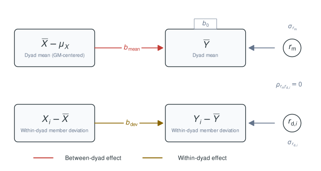
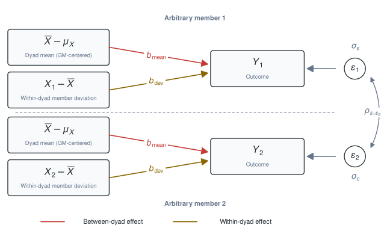
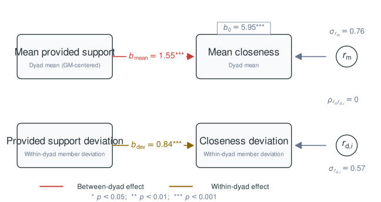

library(dyadMLM)
has_glmmTMB <- requireNamespace("glmmTMB", quietly = TRUE)
has_htmltools <- requireNamespace("htmltools", quietly = TRUE)
dim_fitted_alt <- "Fitted DIM diagram unavailable."This vignette focuses on the Dyad-Individual Model (DIM) for dyadic multilevel models and its relationship to the exchangeable Actor-Partner Interdependence Model (APIM). The DIM separates a predictor into the dyad’s shared level and each member’s deviation from that level. While the APIM expresses effects in terms of two interdependent individuals, the DIM expresses them in terms of the dyad’s shared level and the contrast between partners.
Under exchangeability constraints, the reduced, label-invariant DSM is also equivalent to the DIM, as discussed below. For the broader package workflow and an overview of the available model-specific vignettes, including the Actor-Partner Interdependence Model and Dyadic Score Model, see the online package overview.
Cross-Sectional Gaussian DIM
The current DIM implementation needs one exchangeable dyad composition. Exchangeability means that swapping the two member labels does not change the model (Kenny et al. 2006). Whether roles can and should be treated as exchangeable is a substantive assumption (see Testing distinguishability in the APIM vignette).
Here, we retain the female-female dyads with
keep_compositions. Because both members have the same role,
this gives us one genuinely exchangeable dyad composition. Omitting
role is another option when all dyads should be treated as
one exchangeable composition. Refer to the Getting Started vignette for how to
retain, pool, and constrain dyad compositions.
cross_exchangeable_data <- dyadMLM::prepare_dyad_data(
dyads_cross,
dyad = coupleID,
member = personID,
role = gender,
predictors = provided_support,
# Create both APIM and DIM columns for comparison.
model_types = c("apim", "dim"),
# All three observed compositions in `dyads_cross` are detected and retained by
# default. This example focuses on `female-female` dyads, so we restrict the
# analysis here.
keep_compositions = "female-female",
seed = 123
)
# Print the first two dyads.
print(cross_exchangeable_data, n = 4)
#> # dyadMLM data
#> # Rows: 240 | Dyads: 120 | Intensive longitudinal: no
#> # Structure: dyad = coupleID, member = personID, role = gender
#> #
#> # Dyad compositions:
#> # female_x_female exchangeable 120 dyads
#> #
#> # Added columns:
#> # .dy_composition inferred dyad composition
#> # .dy_composition_role composition-specific member role
#> # .dy_is_{comp-role} composition-role indicator columns
#> # .dy_member_contrast_{comp}_arbitrary composition-specific member contrasts
#> # with arbitrary direction; 0 for
#> # distinguishable dyads or other
#> # exchangeable compositions
#> # .dy_{pred}_actor APIM actor predictor: actor's
#> # original predictor values
#> # .dy_{pred}_partner APIM partner predictor: partner's
#> # original predictor values
#> # .dy_{pred}_dyad_mean_gmc dyad-mean predictor: dyad's average
#> # predictor level, grand-mean centered
#> # .dy_{pred}_within_dyad_dev DIM within-dyad member-deviation
#> # predictor: member's difference from
#> # the dyad mean
#> #
#> # A tibble: 240 × 14
#> personID coupleID gender dyad_composition closeness provided_support
#> <int> <int> <fct> <fct> <dbl> <dbl>
#> 1 241 121 female female_x_female 7.58 5.41
#> 2 242 121 female female_x_female 6.15 5.19
#> 3 243 122 female female_x_female 8.28 5.89
#> 4 244 122 female female_x_female 8.00 5.57
#> # ℹ 236 more rows
#> # ℹ 8 more variables: .dy_composition <fct>, .dy_composition_role <fct>,
#> # .dy_is_female_x_female <dbl>,
#> # .dy_member_contrast_female_x_female_arbitrary <dbl>,
#> # .dy_provided_support_actor <dbl>, .dy_provided_support_partner <dbl>,
#> # .dy_provided_support_dyad_mean_gmc <dbl>,
#> # .dy_provided_support_within_dyad_dev <dbl>For the exchangeable random-effects specification,
dyadMLM::prepare_dyad_data() creates a member-difference
contrast .dy_member_contrast_*, coded as +1
for one partner and -1 for the other. Because these member
labels are arbitrary, setting seed makes their assignment
reproducible.
Example DIM Model
For member of dyad , define the dyad mean and within-dyad member deviation as:
The model uses , the grand-mean-centered dyad mean.
The deviations of the two partners have equal magnitude and opposite signs: . Outcome means and deviations are defined analogously. The variables that enter the DIM fixed effects then separate two associations:
- The between-dyad effect, : whether dyads with a higher dyad mean than other dyads also have a higher outcome mean.
- The within-dyad effect, : whether the member who is above the dyad’s predictor mean is also above the dyad’s outcome mean. With two members, each deviation is half the corresponding signed partner difference.
The dyad mean varies between dyads, whereas member deviations vary within a dyad. Accordingly, the upper path is the between-dyad effect and the lower path is the within-dyad effect. Switching members reverses both deviations and therefore leaves the pooled unchanged.

Cross-sectional DIM. The dyad mean has a between-dyad effect, and the within-dyad member deviation has a within-dyad effect. Mean and deviation residuals are uncorrelated under exchangeability. Both members’ residuals and their correlation can be obtained from these residuals.
Uncorrelated and in the conceptual representation do not imply that the member residuals are independent: the two component variances together determine the covariance between the members’ residuals.
The second diagram translates the same decomposition to the individual-member rows used by the long-format multilevel model. Each member’s outcome is predicted by the dyad mean and that member’s own within-dyad member deviation. Both members share the same two coefficients, so estimation pools information across members under the exchangeability assumptions.

Individual-level representation of the cross-sectional DIM used for the long-format multilevel model.
The resulting estimated fixed effects are a reparameterization of the
APIM actor and partner effects (Bolger et al.
2025). And just like the exchangeable APIM, the random-effects
structure comprises a dyad-level intercept and a dyad-level difference
contrast indexed by
.dy_member_contrast_female_x_female_arbitrary. In
glmmTMB, with dispformula = ~ 0, these random
effects represent the two members’ Gaussian residual variance and
covariance.
The intercept and difference contrast are specified as separate random-effects terms. No additional correlation is needed because the two residual variances already determine the partners’ residual correlation. Under exchangeability, the mean-deviation residual correlation is therefore fixed to zero (del Rosario and West 2025).
The full model can be estimated as:
dim_1 <- glmmTMB::glmmTMB(
closeness ~
# Pooled fixed intercept
1 +
# Between-dyad effect
.dy_provided_support_dyad_mean_gmc +
# Within-dyad effect
.dy_provided_support_within_dyad_dev +
# Residual Gaussian covariance structure
us(1 | coupleID) +
us(0 + .dy_member_contrast_female_x_female_arbitrary | coupleID)
, dispformula = ~ 0
, family = gaussian()
, data = cross_exchangeable_data
)
summary(dim_1)
#> Family: gaussian ( identity )
#> Formula:
#> closeness ~ 1 + .dy_provided_support_dyad_mean_gmc + .dy_provided_support_within_dyad_dev +
#> us(1 | coupleID) + us(0 + .dy_member_contrast_female_x_female_arbitrary |
#> coupleID)
#> Dispersion: ~0
#> Data: cross_exchangeable_data
#>
#> AIC BIC logLik -2*log(L) df.resid
#> 631.5 648.9 -310.7 621.5 235
#>
#> Random effects:
#>
#> Conditional model:
#> Groups Name Variance Std.Dev.
#> coupleID (Intercept) 0.5650 0.7516
#> coupleID.1 .dy_member_contrast_female_x_female_arbitrary 0.2692 0.5189
#> Number of obs: 240, groups: coupleID, 120
#>
#> Conditional model:
#> Estimate Std. Error z value Pr(>|z|)
#> (Intercept) 5.94511 0.06861 86.64 <2e-16 ***
#> .dy_provided_support_dyad_mean_gmc 1.54652 0.09582 16.14 <2e-16 ***
#> .dy_provided_support_within_dyad_dev 0.89515 0.10726 8.35 <2e-16 ***
#> ---
#> Signif. codes: 0 '***' 0.001 '**' 0.01 '*' 0.05 '.' 0.1 ' ' 1The same mean-and-deviation diagram can now be labelled with the estimated fixed effects and residual-component standard deviations:

Estimated fixed effects and residual-component standard deviations from the cross-sectional Gaussian DIM in its mean-and-deviation representation. The intercept belongs to the outcome-mean equation.
Under these exchangeability constraints, the Gaussian DIM is algebraically equivalent to the reduced, label-invariant Dyadic Score Model (DSM) (Iida et al. 2018). Compared to a full DSM, the DIM’s exchangeability constraints fix the outcome-deviation intercept and both cross-paths to zero and constrain the mean and deviation residual components to be uncorrelated (see the diagrams here and compare them with the conceptual DSM diagrams).
Model interpretation
Therefore, each coefficient has both an individual-member interpretation and an equivalent dyad mean/difference interpretation.
In this Gaussian model, fixed coefficients are interpreted in units of the outcome, here closeness:
The intercept (about 5.95) is the expected closeness of either member, and therefore the expected couple-average closeness, when both members’ provided support equals the sample grand mean.
The between-dyad effect estimate (about 1.55) means that, comparing couples with the same support difference between partners, a one-point higher couple-average provided-support level is associated with a 1.55-point higher expected couple-average closeness. Equivalently, each member’s expected closeness is 1.55 points higher.
The within-dyad effect estimate (about 0.90) means that a one-point difference in provided support between partners is associated with a 0.90-point difference in their expected closeness, holding their average support constant. In member terms, suppose one member is 0.5 points above the dyad mean and the other is 0.5 points below it. Their expected closeness is then about 0.45 points above and below the couple’s predicted mean, respectively, so they are expected to differ by 0.90 points in closeness.
Because the Gaussian DIM is the exchangeability-constrained version of the full DSM, exchangeability can also be tested by comparing these nested models. This is equivalent to the comparison shown in Testing distinguishability in the APIM vignette.
Demonstrating model equivalence to APIM
The same model can be written in APIM form. Since we have requested
both sets of variables from dyadMLM::prepare_dyad_data(),
we can fit one directly. For more guidance on APIM specifications and
different models, see the Actor-Partner
Interdependence Model vignette.
apim_1 <- glmmTMB::glmmTMB(
closeness ~ 1 +
# Fixed effects APIM
.dy_provided_support_actor + .dy_provided_support_partner +
# Since both models are equivalent, the same random-effects structure
# can be used. See the APIM vignette to learn how to back-transform
# these blocks to a full actor-partner covariance matrix.
us(1 | coupleID) +
us(0 + .dy_member_contrast_female_x_female_arbitrary | coupleID)
, dispformula = ~ 0
, family = gaussian()
, data = cross_exchangeable_data
)The two models have identical fit statistics:
data.frame(
model = c("DIM", "APIM"),
AIC = c(AIC(dim_1), AIC(apim_1)),
BIC = c(BIC(dim_1), BIC(apim_1)),
logLik = c(as.numeric(logLik(dim_1)), as.numeric(logLik(apim_1)))
)
#> model AIC BIC logLik
#> 1 DIM 631.4539 648.857 -310.7269
#> 2 APIM 631.4539 648.857 -310.7269This demonstrates that the same statistical model is being estimated with different parameterizations and coefficient interpretations.
Once APIM estimates are present, one can easily obtain DIM estimates, and the other way around. Let and denote the APIM actor and partner slopes, and let and denote the DIM between-dyad and within-dyad slopes. They relate as follows:
and
Conversely:
and
In this example we can see that the transformations work:
apim_coef <- glmmTMB::fixef(apim_1)$cond
dim_coef <- glmmTMB::fixef(dim_1)$cond
b_actor <- apim_coef[[".dy_provided_support_actor"]]
b_partner <- apim_coef[[".dy_provided_support_partner"]]
b_mean <- dim_coef[[".dy_provided_support_dyad_mean_gmc"]]
b_dev <- dim_coef[[".dy_provided_support_within_dyad_dev"]]
cat("From APIM model:\n",
" actor effect: ", round(b_actor, 3), "\n",
" partner effect: ", round(b_partner, 3), "\n\n",
"DIM transformation:\n",
" b_mean = b_actor + b_partner: ", round(b_actor + b_partner, 3), "\n",
" b_dev = b_actor - b_partner: ", round(b_actor - b_partner, 3), "\n\n",
"From DIM model:\n",
" between-dyad effect: ", round(b_mean, 3), "\n",
" within-dyad effect: ", round(b_dev, 3), "\n"
)
#> From APIM model:
#> actor effect: 1.221
#> partner effect: 0.326
#>
#> DIM transformation:
#> b_mean = b_actor + b_partner: 1.547
#> b_dev = b_actor - b_partner: 0.895
#>
#> From DIM model:
#> between-dyad effect: 1.547
#> within-dyad effect: 0.895The DIM and APIM intercepts are not expected to be equal because the DIM dyad mean is grand-mean centered, whereas the APIM predictors retain their original scale.
Why Are These Models Equivalent? Exploring the Reparameterization
An intuitive way to think about this is:
When the dyad mean goes up by 1 unit while the difference between partners remains stable, both partners’ values must go up by 1. Both the actor and partner effects therefore contribute, which is why the between-dyad effect is the actor effect + the partner effect.
When a person’s deviation from the dyad mean goes up by 1 unit while the dyad mean remains constant, the other partner’s value must go down by 1 unit. The actor value therefore changes by +1 and the partner value by -1, which is why the within-dyad effect is the actor effect - the partner effect.
The grid below shows the same predictor values in both coordinate systems. The horizontal and vertical axes are actor and partner values centered at the sample grand mean. The diagonal axes are their dyad mean and within-dyad member deviation.
The displayed actor and partner slopes are read from the fitted APIM. The DIM slopes are their exact sum-and-difference transformation; the directly fitted DIM estimates above confirm the equivalence. Both forms therefore make the same change in the linear predictor relative to the grand-mean reference. The intercept is omitted from both displayed equations.
Drag the dot or move either set of sliders. Both equations give the same fitted change in the linear predictor.
Random-effect transformation
The DIM and APIM models above already use the same sum-and-difference random-effects parameterization (del Rosario and West 2025). See the exchangeable residual-structure section of the APIM vignette for the derivation and back-transformation to the member-level covariance matrix.
Intensive Longitudinal DIM
For longitudinal DIM, predictors are decomposed into within-person
and between-person components before the dyadic decomposition (Bolger and Laurenceau 2013; Gistelinck and Loeys
2020). The default "auto" selects "2l"
when both time and predictors are supplied. It
also retains raw dyad-occasion means and within-dyad member deviations.
The decomposed columns used below are:
- The
cwpdyad mean captures a shared occasion-specific shift from the two members’ usual levels (shared occasion-level variation). - The
cwpwithin-dyad member deviation captures which member is further above or below their own usual level on that occasion. - The
cbpdyad mean captures the dyad’s shared usual level relative to the sample’s grand mean (stable between-dyad differences). - The
cbpwithin-dyad member deviation captures each member’s stable difference from the dyad’s usual level.
The cbp terms use each member’s mean across the observed
occasions to estimate that member’s longer-run usual level. With few
occasions (small
),
especially when the predictor has low stability over time, these person
means can be unreliable. The associated between-person estimates can
therefore be biased or imprecise, so they should be interpreted
cautiously (Gottfredson 2019).
Use temporal_decomposition = "none" to construct only
the raw dyad-occasion mean and within-dyad member deviation.
ild_exchangeable_data <- dyadMLM::prepare_dyad_data(
dyads_ild,
dyad = coupleID,
member = personID,
role = gender,
time = diaryday,
predictors = provided_support,
model_types = c("apim", "dim"),
keep_compositions = "female-female",
seed = 123
)
print(ild_exchangeable_data)
#> # dyadMLM data
#> # Rows: 3360 | Dyads: 120 | Intensive longitudinal: yes
#> # Structure: dyad = coupleID, member = personID, role = gender, time = diaryday
#> #
#> # Dyad compositions:
#> # female_x_female exchangeable 120 dyads
#> #
#> # Added columns:
#> # .dy_composition inferred dyad composition
#> # .dy_composition_role composition-specific member role
#> # .dy_is_{comp-role} composition-role indicator columns
#> # .dy_member_contrast_{comp}_arbitrary composition-specific member contrasts
#> # with arbitrary direction; 0 for
#> # distinguishable dyads or other
#> # exchangeable compositions
#> # .dy_{pred}_cwp within-person predictor: momentary
#> # deviations from each person's usual
#> # level
#> # .dy_{pred}_cbp between-person predictor: stable
#> # differences from the average person's
#> # usual level
#> # .dy_{pred}_actor APIM actor predictor: actor's
#> # original predictor values
#> # .dy_{pred}_partner APIM partner predictor: partner's
#> # original predictor values
#> # .dy_{pred}_cwp_actor APIM within-person actor predictor:
#> # actor's momentary deviations from
#> # their usual level
#> # .dy_{pred}_cwp_partner APIM within-person partner predictor:
#> # partner's momentary deviations from
#> # their usual level
#> # .dy_{pred}_cbp_actor APIM between-person actor predictor:
#> # actor's stable difference from the
#> # average person's usual level
#> # .dy_{pred}_cbp_partner APIM between-person partner
#> # predictor: partner's stable
#> # difference from the average person's
#> # usual level
#> # .dy_{pred}_dyad_mean_gmc dyad-mean predictor: dyad's average
#> # predictor level, grand-mean centered
#> # .dy_{pred}_within_dyad_dev DIM within-dyad member-deviation
#> # predictor: member's difference from
#> # the dyad mean
#> # .dy_{pred}_cwp_dyad_mean within-person dyad-mean predictor:
#> # shared momentary deviations in the
#> # dyad
#> # .dy_{pred}_cwp_within_dyad_dev DIM within-person, within-dyad
#> # member-deviation predictor: member's
#> # momentary deviation from the dyad
#> # mean
#> # .dy_{pred}_cbp_dyad_mean between-person dyad-mean predictor:
#> # dyad's stable usual level, grand-mean
#> # centered
#> # .dy_{pred}_cbp_within_dyad_dev DIM between-person, within-dyad
#> # member-deviation predictor: member's
#> # stable difference from the dyad's
#> # usual level
#> #
#> # A tibble: 3,360 × 25
#> personID coupleID diaryday gender dyad_composition closeness provided_support
#> <int> <int> <int> <fct> <fct> <dbl> <dbl>
#> 1 241 121 0 female female_x_female 6.59 6.18
#> 2 242 121 0 female female_x_female 5.73 5.70
#> 3 241 121 1 female female_x_female 8.70 4.57
#> 4 242 121 1 female female_x_female 5.61 5.30
#> 5 241 121 2 female female_x_female 7.06 5.19
#> 6 242 121 2 female female_x_female 6.72 3.89
#> 7 241 121 3 female female_x_female 6.36 6.28
#> 8 242 121 3 female female_x_female 6.67 5.26
#> 9 241 121 4 female female_x_female 7.91 6.94
#> 10 242 121 4 female female_x_female 7.35 5.59
#> # ℹ 3,350 more rows
#> # ℹ 18 more variables: .dy_composition <fct>, .dy_composition_role <fct>,
#> # .dy_is_female_x_female <dbl>,
#> # .dy_member_contrast_female_x_female_arbitrary <dbl>,
#> # .dy_provided_support_cwp <dbl>, .dy_provided_support_cbp <dbl>,
#> # .dy_provided_support_actor <dbl>, .dy_provided_support_partner <dbl>,
#> # .dy_provided_support_cwp_actor <dbl>, …The example below estimates same-day associations between support and
closeness and includes diaryday to adjust for a linear
trend across the study.
dim_ILD <- glmmTMB::glmmTMB(
closeness ~
1 +
diaryday +
# Within-person DIM
.dy_provided_support_cwp_dyad_mean +
.dy_provided_support_cwp_within_dyad_dev +
# Between-person DIM
.dy_provided_support_cbp_dyad_mean +
.dy_provided_support_cbp_within_dyad_dev +
# Stable exchangeable dyad-level covariance
us(1 | coupleID) +
us(0 + .dy_member_contrast_female_x_female_arbitrary | coupleID) +
# Residual (same-day) exchangeable dyad-level covariance
us(1 | coupleID:diaryday) +
us(0 + .dy_member_contrast_female_x_female_arbitrary | coupleID:diaryday)
, dispformula = ~ 0
, family = gaussian()
, data = ild_exchangeable_data
)
summary(dim_ILD)
#> Family: gaussian ( identity )
#> Formula:
#> closeness ~ 1 + diaryday + .dy_provided_support_cwp_dyad_mean +
#> .dy_provided_support_cwp_within_dyad_dev + .dy_provided_support_cbp_dyad_mean +
#> .dy_provided_support_cbp_within_dyad_dev + us(1 | coupleID) +
#> us(0 + .dy_member_contrast_female_x_female_arbitrary | coupleID) +
#> us(1 | coupleID:diaryday) + us(0 + .dy_member_contrast_female_x_female_arbitrary |
#> coupleID:diaryday)
#> Dispersion: ~0
#> Data: ild_exchangeable_data
#>
#> AIC BIC logLik -2*log(L) df.resid
#> 8514.6 8575.8 -4247.3 8494.6 3350
#>
#> Random effects:
#>
#> Conditional model:
#> Groups Name Variance
#> coupleID (Intercept) 0.5359
#> coupleID.1 .dy_member_contrast_female_x_female_arbitrary 0.2536
#> coupleID.diaryday (Intercept) 0.4070
#> coupleID.diaryday.1 .dy_member_contrast_female_x_female_arbitrary 0.2182
#> Std.Dev.
#> 0.7320
#> 0.5036
#> 0.6380
#> 0.4672
#> Number of obs: 3360, groups: coupleID, 120; coupleID:diaryday, 1680
#>
#> Conditional model:
#> Estimate Std. Error z value Pr(>|z|)
#> (Intercept) 5.898698 0.073060 80.74 <2e-16
#> diaryday 0.007138 0.003861 1.85 0.0645
#> .dy_provided_support_cwp_dyad_mean 0.493141 0.029327 16.82 <2e-16
#> .dy_provided_support_cwp_within_dyad_dev -0.005806 0.026949 -0.22 0.8294
#> .dy_provided_support_cbp_dyad_mean 1.546530 0.095815 16.14 <2e-16
#> .dy_provided_support_cbp_within_dyad_dev 0.895142 0.107261 8.35 <2e-16
#>
#> (Intercept) ***
#> diaryday .
#> .dy_provided_support_cwp_dyad_mean ***
#> .dy_provided_support_cwp_within_dyad_dev
#> .dy_provided_support_cbp_dyad_mean ***
#> .dy_provided_support_cbp_within_dyad_dev ***
#> ---
#> Signif. codes: 0 '***' 0.001 '**' 0.01 '*' 0.05 '.' 0.1 ' ' 1Interpretation of concurrent ILD DIM coefficients
The same mean-and-deviation interpretation applies longitudinally. Coefficients of dyad means describe both expected individual outcomes and expected couple-average outcomes. Coefficients of within-dyad member deviations describe both members’ deviations and their expected difference.
The
cbpdyad-mean estimate (about 1.55) means that, comparing couples whose average usual support differs by one point while holding the stable difference between partners constant, expected couple-average closeness is 1.55 points higher for the higher-support couple. Equivalently, each member is expected to report 1.55 points higher closeness.The
cwpdyad-mean estimate (about 0.49) means that when both members are one point above their respective usual support levels, each member’s expected closeness is 0.49 points higher than when both are at their usual levels, holding the difference between their momentary deviations constant. Equivalently, expected couple-average closeness is 0.49 points higher on that occasion.The
cbpwithin-dyad member-deviation estimate (about 0.90) means that if partners differ by one point in their usual support levels, they are expected to differ by 0.90 points in closeness, holding the couple’s average usual support and the other predictors constant. In member terms, suppose one member is 0.5 points above the couple’s average usual support and the other is 0.5 points below it. Their expected closeness is then about 0.45 points above and below the couple’s predicted mean, respectively.The
cwpwithin-dyad member-deviation estimate (about -0.01) is close to zero. If one partner’s momentary deviation from usual support is one point higher than the other partner’s deviation, there is essentially no expected closeness difference between them from this term, holding the occasion-specific dyad mean and the other predictors constant.
Equivalence of APIM and DIM in ILD
The equivalent APIM uses actor and partner effects on both levels, as shown in the concurrent ILD APIM example. The APIM and DIM again estimate the same model with different coefficients.
The equivalence holds separately for the within-person
(cwp) and between-person (cbp) predictor
components. For the within-person component:
For the between-person component:
An APIM parameterization can therefore be used on one level and a DIM parameterization on the other. This mixed parameterization changes the coefficients, but still estimates the same model.
Including Random Slopes
Random slopes can be included in the DIM by adding the corresponding
within-person effects to the stable dyad-level random-effect blocks. The
shared block contains the DIM intercept, dyad-mean slope, and
within-dyad member-deviation slope. The
.dy_member_contrast_* block contains their
member-difference counterparts. Together, these blocks allow the two
members to have different random slopes while preserving
exchangeability.
Transforming DIM random slopes to APIM slopes
Applying the same transformation to the random-slope coefficients
proceeds in two steps. First, transform the DIM dyad-mean and
within-dyad member-deviation random slopes into APIM actor and partner
random slopes. Random effects use
,
with subscripts that write out actor, partner,
mean, and dev. For the shared block,
and for the .dy_member_contrast_* block, marked by a
tilde,
The shared and .dy_member_contrast_* random intercepts
remain unchanged.
We now have the shared and .dy_member_contrast_* actor
and partner effects which are then back-transformed into the complete
and more readily interpretable member-specific actor-partner covariance
matrix. This is described in the exchangeable
random-slope back-transformation in the APIM vignette. The APIM
vignette also shows how to test constraints
on these random effects.
Dynamic ILD models
Dynamic dyadic models are most directly expressed in APIM terms: a member’s own lagged outcome represents stability, whereas the partner’s lagged outcome represents influence. See the dynamic ILD APIM example for data preparation, a fitted model, and important cautions about outcome lags in short time series.
Under exchangeability, the same fixed effects can be reparameterized as lagged DIM effects. The lagged dyad mean describes how the members’ shared prior outcome level relates to their current outcomes, while the lagged within-dyad member deviation describes how their prior difference relates to their current difference. This changes the coefficient parameterization, not the fitted values.
Return to the Actor-Partner Interdependence Model vignette, see the Dyadic Score Model vignette for a related model specification, or return to the online package overview.